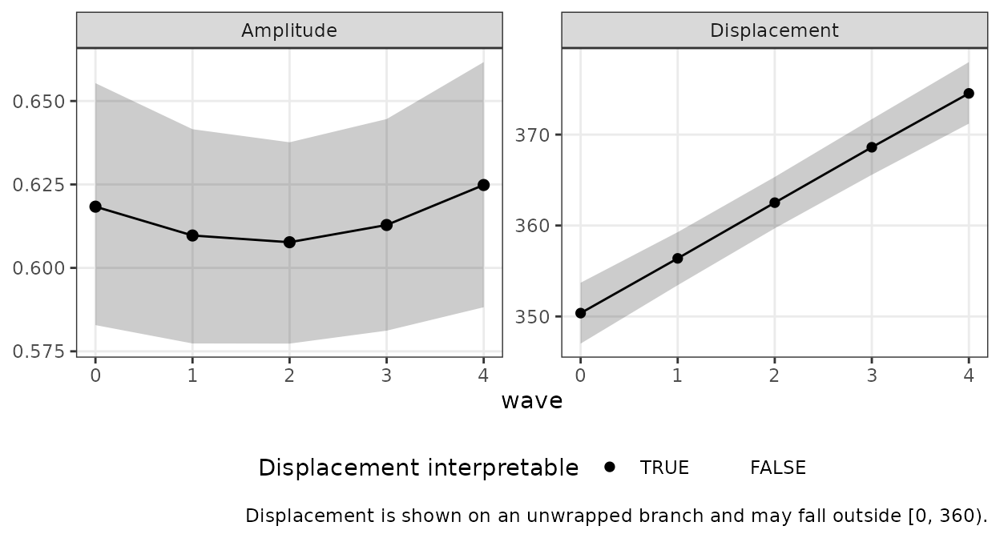
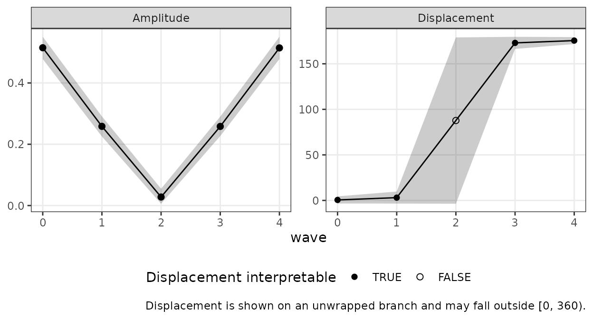

1. The question growth modeling answers
A single Structural Summary Method (SSM) analysis describes one profile: an elevation , an amplitude , and a displacement . With repeated measurements — the same persons assessed at several waves — a new question opens up: how does the profile change over time? Does the group’s interpersonal style drift toward warmth? Does its distinctiveness (amplitude) grow or fade?
Displacement is an angle, and angles resist ordinary growth modeling: a trajectory drifting from 350° to 10° has moved 20°, not −340°, and a linear model fit directly to raw displacements will get this wrong whenever a trajectory crosses the 0°/360° boundary. This vignette presents the package’s recommended recipe, which avoids the boundary entirely by modeling growth in the Cartesian coordinates — the same coordinates the SSM estimator itself uses — and converting fitted trajectories back to with circular-correct summaries at the end.
The division of labor is deliberate and mirrors the package’s
Bayesian vignette: circumplex does not fit mixed
models. It prepares the coordinate data on the way in
(ssm_parameters_id()) and converts fitted model draws on
the way out (ssm_draws()); the growth model itself belongs
to a dedicated mixed-modeling package. The reference recipe below uses
glmmTMB; the same stacked-outcome formulation can be
fit with nlme (shipped with base R) using its
varIdent/corSymm machinery.
2. From repeated measures to a coordinate table
The input to the growth model is a person-by-wave table of SSM
coordinates. ssm_parameters_id() computes each person’s
(and
,
,
fit) from their circumplex scale scores; applied per wave, it yields
exactly the tidy input a mixed model wants.
We simulate five waves of octant scores for 150 persons whose group-level displacement drifts from 350° to 10° — deliberately crossing the 0°/360° boundary — with amplitude near 0.6 throughout.
n <- 150
waves <- 0:4
theta <- as.numeric(octants()) * pi / 180
# Group trajectory: (x, y) linear between 0.6*(cos, sin)(350 deg) and
# 0.6*(cos, sin)(10 deg); elevation constant at 0.5
xy_start <- 0.6 * c(cos(350 * pi / 180), sin(350 * pi / 180))
xy_end <- 0.6 * c(cos(10 * pi / 180), sin(10 * pi / 180))
x_t <- seq(xy_start[1], xy_end[1], length.out = length(waves))
y_t <- seq(xy_start[2], xy_end[2], length.out = length(waves))
# Person effects: elevation shifts and profile tilts, stable across waves
u_e <- rnorm(n, 0, 0.30)
v_x <- rnorm(n, 0, 0.15)
v_y <- rnorm(n, 0, 0.15)
coord <- do.call(rbind, lapply(seq_along(waves), function(k) {
mu <- 0.5 + (x_t[k] + v_x) %o% cos(theta) + (y_t[k] + v_y) %o% sin(theta)
scores <- mu + u_e + matrix(rnorm(n * length(theta), 0, 0.40), n)
colnames(scores) <- PANO()
pp <- ssm_parameters_id(as.data.frame(scores), scales = PANO())
data.frame(person = pp$id, wave = waves[k],
e = pp$Elev, x = pp$Xval, y = pp$Yval)
}))
head(coord, 3)
#> person wave e x y
#> 1 1 0 0.4595363 0.5697631 -0.1920113
#> 2 2 0 0.8644617 0.9896316 0.2426116
#> 3 3 0 0.5354376 0.6640467 -0.21646743. One joint model, not three separate ones
The growth model treats the three coordinates as a
multivariate outcome: stack them into long format with an
outcome indicator dv, give each outcome its own intercept
and slope, and let the person-level random effects be correlated
across outcomes.
long <- reshape(coord, direction = "long",
varying = list(c("e", "x", "y")), v.names = "value",
timevar = "dv", times = c("e", "x", "y"),
idvar = c("person", "wave"))
long$dv <- factor(long$dv, levels = c("e", "x", "y"))
long$person <- factor(long$person)
fit <- glmmTMB::glmmTMB(
value ~ 0 + dv + dv:wave + us(0 + dv | person),
dispformula = ~ 0 + dv,
data = long,
REML = TRUE
)
glmmTMB::fixef(fit)$cond
#> dve dvx dvy dve:wave dvx:wave
#> 0.5249198595 0.6085429795 -0.1036244260 -0.0007414075 -0.0010567782
#> dvy:wave
#> 0.0649480442Why joint? The displacement is derived from and together, so its uncertainty depends on their joint sampling distribution — including the covariance . Fitting two (or three) univariate mixed models instead is a tempting shortcut that produces valid-looking output and wrong intervals: separate fits have independent covariance matrices, which silently sets . In our validation simulations, a design with strongly correlated – person effects (a realistic situation — profile tilts are rarely axis-aligned) drops the shortcut’s pointwise coverage from the nominal 95% to roughly 86%, while the joint recipe stays at nominal. Do not fit the coordinates separately.
4. From fixed effects to with intervals
The fixed effects define the mean trajectory
.
To carry uncertainty through the nonlinear map to
,
draw coefficient vectors from the multivariate normal implied by the
fixed-effect covariance matrix — the same asymptotic move the package’s
Monte Carlo engine makes — evaluate each draw at each wave, and hand the
per-wave draws to ssm_draws(), which applies the package’s
circular-statistics machinery (medians and circular means, equal-tailed
intervals with correct wrapping at the boundary).
fe <- glmmTMB::fixef(fit)$cond
V <- as.matrix(vcov(fit)$cond)
# MVN draws of the coefficient vector (eigen root, robust to tiny
# negative eigenvalues from floating point)
mvn_draw <- function(n_draws, mu, sigma) {
eig <- eigen(sigma, symmetric = TRUE)
root <- eig$vectors %*% (sqrt(pmax(eig$values, 0)) * t(eig$vectors))
sweep(matrix(rnorm(n_draws * length(mu)), nrow = n_draws) %*% root,
2, mu, "+")
}
B <- mvn_draw(4000, fe, V)
colnames(B) <- names(fe)
per_wave <- lapply(waves, function(t) {
draws_t <- cbind(
e = B[, "dve"] + t * B[, "dve:wave"],
x = B[, "dvx"] + t * B[, "dvx:wave"],
y = B[, "dvy"] + t * B[, "dvy:wave"]
)
ssm_draws(draws_t, type = "parameters")
})
trajectory <- data.frame(
wave = waves,
a_est = sapply(per_wave, function(s) s$results$a_est),
a_lci = sapply(per_wave, function(s) s$results$a_lci),
a_uci = sapply(per_wave, function(s) s$results$a_uci),
d_est = sapply(per_wave, function(s) as.numeric(s$results$d_est)),
d_lci = sapply(per_wave, function(s) as.numeric(s$results$d_lci)),
d_uci = sapply(per_wave, function(s) as.numeric(s$results$d_uci)),
certified = sapply(per_wave, function(s) s$details$certified)
)
round_df <- trajectory
round_df[-1] <- lapply(round_df[-1], function(v) {
if (is.numeric(v)) round(v, 2) else v
})
round_df
#> wave a_est a_lci a_uci d_est d_lci d_uci certified
#> 1 0 0.62 0.58 0.66 350.37 347.01 353.71 TRUE
#> 2 1 0.61 0.58 0.64 356.39 353.44 359.27 TRUE
#> 3 2 0.61 0.58 0.64 2.51 359.69 5.34 TRUE
#> 4 3 0.61 0.58 0.64 8.61 5.58 11.69 TRUE
#> 5 4 0.62 0.59 0.66 14.53 11.21 17.97 TRUEThe displacement estimates hug the 0°/360° boundary by design —
values near 350° at early waves and near 10° at late waves — and the
intervals wrap correctly rather than spanning “the long way around.” A
table in this shape — one row per time point, with
a_est/a_lci/a_uci,
d_est/d_lci/d_uci, and optionally
certified — is what ssm_plot_trajectory()
plots directly:
ssm_plot_trajectory(trajectory, time = "wave")
The displacement panel is drawn on an unwrapped branch, so
the trajectory crosses the boundary as one continuous path instead of
jumping a full turn, and values there may legitimately fall outside
.
Each interval is placed on its estimate’s branch and keeps the width it
was reported with — including an interval that straddles the seam, which
is stored with d_lci > d_uci. Doing this by hand is easy
to get subtly wrong: the natural “shift each bound by its signed
distance from the estimate” recipe silently cannot represent an interval
wider than a half-turn, which is exactly the near-origin case Section 5
is about. The function handles both.
5. Certification: when intervals are not interpretable
A direction is only meaningful when the trajectory is far enough from
the origin. As
the draws of
become diffuse or bimodal, and a quantile interval of them is not a
trustworthy statement about direction. At each wave,
ssm_draws() applies the package’s scale-free certification
rule to the amplitude interval (lower bound at least 0.35
interval-widths above zero) and records the verdict in
$details$certified — the certified column
above. At any uncertified wave, the
interval is not interpretable and should be reported as such,
not narrated as a direction.
Every wave in our worked example is certified. Here is a trajectory where that fails: the group crosses near the origin mid-study (its coordinate changes sign while stays near zero).
x_t2 <- seq(0.5, -0.5, length.out = length(waves))
coord2 <- do.call(rbind, lapply(seq_along(waves), function(k) {
mu <- 0.5 + (x_t2[k] + v_x) %o% cos(theta) + (0.02 + v_y) %o% sin(theta)
scores <- mu + u_e + matrix(rnorm(n * length(theta), 0, 0.40), n)
colnames(scores) <- PANO()
pp <- ssm_parameters_id(as.data.frame(scores), scales = PANO())
data.frame(person = pp$id, wave = waves[k],
e = pp$Elev, x = pp$Xval, y = pp$Yval)
}))
long2 <- reshape(coord2, direction = "long",
varying = list(c("e", "x", "y")), v.names = "value",
timevar = "dv", times = c("e", "x", "y"),
idvar = c("person", "wave"))
long2$dv <- factor(long2$dv, levels = c("e", "x", "y"))
long2$person <- factor(long2$person)
fit2 <- glmmTMB::glmmTMB(
value ~ 0 + dv + dv:wave + us(0 + dv | person),
dispformula = ~ 0 + dv, data = long2, REML = TRUE
)
fe2 <- glmmTMB::fixef(fit2)$cond
B2 <- mvn_draw(4000, fe2, as.matrix(vcov(fit2)$cond))
colnames(B2) <- names(fe2)
mid <- ssm_draws(cbind(
e = B2[, "dve"] + 2 * B2[, "dve:wave"],
x = B2[, "dvx"] + 2 * B2[, "dvx:wave"],
y = B2[, "dvy"] + 2 * B2[, "dvy:wave"]
), type = "parameters")
mid
#>
#> # Posterior Summary:
#>
#> Estimate Lower CrI Upper CrI
#> Elevation 0.516 0.468 0.565
#> X-Value 0.001 -0.030 0.031
#> Y-Value 0.023 -0.005 0.051
#> Amplitude 0.028 0.006 0.055
#> Displacement 87.741 356.372 178.957
#> Model Fit
#> Note: the amplitude CrI lower bound is under 0.35 CrI-widths above zero; the displacement is not interpretable.The printed note is the certification rule firing: at this wave the amplitude interval sits too close to zero, and the displacement interval — here spanning more than half the circle — is not a statement about direction. In our validation simulations of this regime, the caution fires at the degraded wave in essentially every replicate while the origin-distal waves remain certified and nominally covered.
Assembling this fit’s full trajectory the same way, and carrying the
certified verdict into the table, lets the plot mark the
verdict itself:
per_wave2 <- lapply(waves, function(t) {
ssm_draws(cbind(
e = B2[, "dve"] + t * B2[, "dve:wave"],
x = B2[, "dvx"] + t * B2[, "dvx:wave"],
y = B2[, "dvy"] + t * B2[, "dvy:wave"]
), type = "parameters")
})
trajectory2 <- data.frame(
wave = waves,
a_est = sapply(per_wave2, function(s) s$results$a_est),
a_lci = sapply(per_wave2, function(s) s$results$a_lci),
a_uci = sapply(per_wave2, function(s) s$results$a_uci),
d_est = sapply(per_wave2, function(s) as.numeric(s$results$d_est)),
d_lci = sapply(per_wave2, function(s) as.numeric(s$results$d_lci)),
d_uci = sapply(per_wave2, function(s) as.numeric(s$results$d_uci)),
certified = sapply(per_wave2, function(s) s$details$certified)
)
ssm_plot_trajectory(trajectory2, time = "wave")
Uncertified waves are drawn as hollow points on the displacement panel. Read them as gaps in the argument, not as estimates with wide intervals: the amplitude panel shows why, with the interval collapsing toward zero as the group passes the origin. The displacement interval at such a wave can cover most of the circle, and the panel draws it at that full width rather than flattening it into something that looks precise.
The certified column is optional. A table without it
plots the same way, minus the hollow marking and its legend — the figure
then makes no claim about interpretability either way, which is the
honest default when the verdict was never computed.
6. A caution about REML intervals at small samples
The fixed-effect covariance matrix used for the draws conditions on
the estimated variance components: it ignores their uncertainty. At
small sample sizes this makes the resulting intervals anticonservative
(too narrow). This is a property of the mixed-model machinery, not of
the SSM transform, and the remedy is user-side: with modest N, prefer
degrees-of-freedom-adjusted inference — the Kenward–Roger adjustment for
lme4 fits via pbkrtest, the approximate
denominator degrees of freedom nlme supplies, or
-quantile-based
intervals — or a parametric bootstrap of the fixed effects, over raw
normal-approximation draws.
7. The unwrap alternative: angle_unwrap()
There is a second documented recipe: compute each person’s displacement at each wave, unwrap each person’s sequence onto a continuous branch, and fit an ordinary univariate growth model to the unwrapped angles.
# One person's displacement over five waves, drifting across the boundary
d_person <- c(350, 355, 2, 8, 12)
angle_unwrap(d_person)
#> [1] 350 355 362 368 372angle_unwrap() wraps its input into [0°, 360°), then
accumulates the shortest signed rotation between successive waves (an
exact 180° step ascends, by the package’s half-turn convention; an
NA makes every later wave branch-ambiguous, so
NA propagates onward). The unwrapped values live on an
ordinary line, so any univariate mixed model applies — this framing
models the mean of the person-level directions, which is a
legitimate (and different) estimand from the direction of the mean
trajectory in Section 4.
Its failure modes are sharp, though, and they are the reason the recipe is the reference:
- Fast movement between waves. Unwrapping assumes successive waves move less than a half-turn. A trajectory sampled too sparsely (or a person who genuinely swings more than 180° between waves) is unwrapped onto the wrong branch with no warning — near-180° jumps are resolved by convention, not by information the data contain.
- No common branch across persons. When persons occupy genuinely heterogeneous locations around the circle (e.g., half the sample near 90°, half near 270°), their unwrapped branches are not comparable, and the fixed-effect “mean trajectory” averages numbers that do not share a scale. The framing has no such requirement.
- Low amplitude. A person’s observed displacement at a wave where their amplitude is near zero is mostly noise, and one noisy wave can throw the rest of that person’s sequence onto a wrong branch (the same reason the Section 5 certification exists).
In the concentrated, common-branch regime — everyone well away from the origin, trajectories moving slowly, directions clustered — the two recipes agree closely (our validation simulations find mean trajectory differences well under a degree), so the choice matters exactly when the unwrap recipe’s assumptions are in doubt.
8. Caveats and upgrades
Two statistical facts about the recipe deserve explicit statement:
- The derived is the direction of the mean trajectory, not the mean of the person-level directions. These differ whenever persons disperse directionally; neither is wrong, but they answer different questions, and Section 7’s unwrap recipe targets the latter.
- The derived shrinks toward zero under directional dispersion. The amplitude of an average profile is smaller than the average of individual amplitudes whenever persons point in different directions — the standard SSM aggregation fact, inherited intact by the growth setting.
Finally, the MVN-draw propagation used here is a large-sample
approximation that is defensible in the concentrated regime and guarded
by the Section 5 certification elsewhere. The fully model-based upgrade
is projected-normal regression — e.g., the
bpnreg package — which models circular outcomes
directly with person-level structure and gives exact posterior inference
for
;
circumplex does not wrap it, but ssm_draws() will happily
summarize posterior draws produced by any such model.
References
- Girard, J. M., Zimmermann, J., & Wright, A. G. C. (2018). New tools for circumplex data analysis and visualization in R. Assessment, 25(1), 3–20.
- Zimmermann, J., & Wright, A. G. C. (2017). Beyond description in interpersonal construct validation: Methodological advances in the circumplex Structural Summary Approach. Assessment, 24(1), 3–23.
- Cremers, J., & Klugkist, I. (2018). One direction? A tutorial for circular data analysis using R with examples in cognitive psychology. Frontiers in Psychology, 9, 2040.